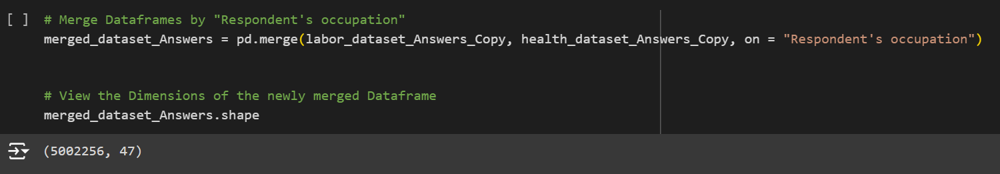
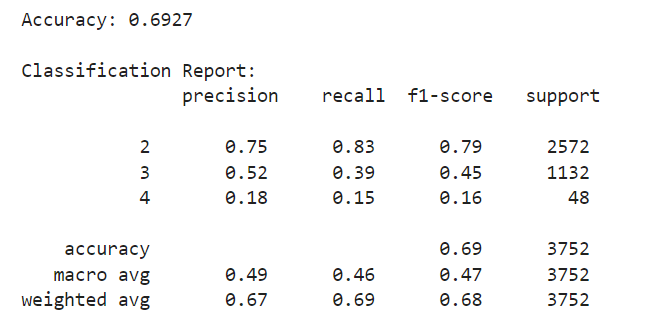
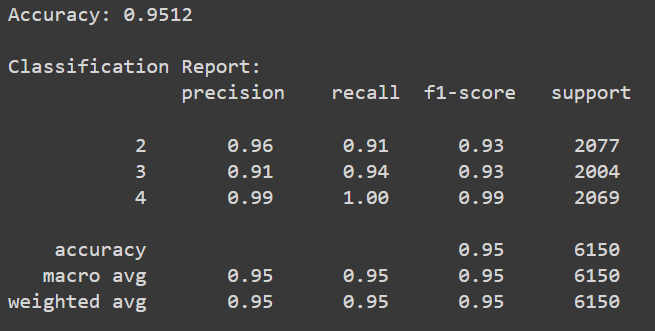

Data Cleaning
The 4 datasets that we will be reading and using for this project are messy and in need of preprocessing, so we first go through some data cleaning.
Using a dictionary, we rename the column names of Answers dataframes to match that of the Codes Dataframes.
Next, we replace the empty spaces with NumPy NaN so that we can use dropna() to remove these data points. We also proceed to remove other dataframes, following the conditions: (1) each column that has at least 60% and 80% of its data missing, (2) each respondent that has at least 2 and 0 missing entries, and (3) all remaining columns with at least 1 missing value.
Finally, we convert the data type of the entire dataframe of all Object columns to 64-bit integers using astype(). Note that we count the answer I DON'T KNOW as 0 and the 6 possible answers of the Health status column to 3 different answers instead -- 1-2 for Great Health, 3 for Moderate Health, and 4-5 for Poor Health.
Data Exploration
We merge the Labor and Health datasets together using the merge() function. This performs an INNER JOIN operation between the two. Then, let's view the dimensions of this newly merged dataframe.
We have a problem as 5002256 IS WAY TOO MUCH. So, we filter out a percentage of the dataframe based on the rows. We initialize a starting point of where we want the "cut" to happen then filter out the next 0.25% of our Dataframe. This should leave us with about 12,000 rows, which is just about enough for our devices to still withstand.
Model Training
The selected model is the well-known RandomForestClassifier from the scikit-learn Machine Learning Library. A Random Forest Classifier is an ensemble learning algorithm used for classification tasks similar to ours. It combines multiple decision trees to create a more accurate and robust model.
For the purposes of the project, this is what will be used in order to predict the Health Status of an individual. The feature variables are going to comprise of the respondent's Work-related, Health-related, and Demographical Background. Using the train_test_split method, 70% of the data will be for training while 30% will be for testing.
Let's fit and predict the "vanilla" version of our Model (without any enhancements) and see how it fairs.
ACCURACY REPORT: 69.27%
We can do better so let's aim for higher than 90%. There is too much data that does not match the model, but where exactly?
One, comes from the several columns where most respondents answered a 0 instead of a 1, and the other comes from the low F1-Score 0.16 of Class 4, indicating an existing Class Imbalance.
To fix these problems, we do these three things:
(1) NORMALIZATION: Using the StandardScaler() method, let's adjust the values to a common scale so that the Model can better compare the data points to each other.
(2) CLASS IMBALANCE: Using SMOTE(), the "Synthetic Minority Over-sampling Technique" method, let's balance the Class Distributions by randomly increasing minority class data points.
(3) FEATURE SELECTION: Finally, using RFECV(), also known as "Recursive Feature Elimination", let's select and filter out the most relevant columns to our Model.
ACCURCAY REPORT: 86.25%
Just three major adjustments were all we needed in order for us to reach our goal.